O OAB dá aos agentes de código os números — tráfego, armazenamento, orçamento, tamanho do time — para dimensionar a arquitetura ao sistema que você está realmente construindo, e justificar cada componente dela.
Open knowledge. Open reasoning. Open architecture.
O mesmo pedido, duas respostas
Vocês são duas pessoas com £50 por mês. Veja o que um agente de código entrega — e o que ele nunca diz: se algo daquilo se justifica, ou o que faria justificar.
o pedido
“projete a arquitetura do meu app de compartilhar receitas”
A resposta de sempre
Operado por: vocês dois. Ninguém disse se você precisa de algo disso.
O que o OAB responde
0.28 requisições de pico por segundo — quatro ordens de grandeza de folga em uma instância
recusados — e a medição que mudaria isso
É essa a diferença inteira. Não uma lista menor — uma lista com um motivo para cada item, e um número que mudaria a resposta. Dá para discordar de um limiar. Não dá para discordar de um achismo.
Lado a lado
Um agente de código sozinho
O mesmo agente, com OAB
Como funciona
Usuários, tráfego, dados, tamanho do time, orçamento, e o que você não pode perder. Ele faz no máximo cinco perguntas — só as que mudam a arquitetura.
Requisições por segundo, crescimento de storage, egress, demanda de conexões, custo. Aritmética reproduzível de calculadoras testadas — com a fórmula impressa para você conferir à mão.
Todo componente tem um preço operacional, não só uma fatura. Um time de dois carrega cerca de quatro componentes antes de a infraestrutura comer o produto. Passando disso, algo tem que sair — ou alguém tem que ser contratado, e ele diz qual.
Toda recusa carrega a medição que a reverteria. Um “não” vira um plano com limiar, em vez de uma opinião em que você tem que confiar.
A outra falha
Kubernetes, Kafka e Redis são a resposta certa para muitos sistemas. A pergunta que o OAB faz é se são a resposta certa para este — e ele falha nos próprios testes se errar em qualquer das duas direções.
A 50.000 requisições/segundo em três regiões, a suíte de testes do OAB falha se ele não recomendar:
O cenário 03 na suíte de avaliação exige que esses componentes estejam presentes. Dois dos cinco cenários protegem contra subdimensionar; três contra superdimensionar.
Aritmética é código, não saída de modelo — toda afirmação de capacidade imprime suas premissas, a fórmula literal, o cálculo substituído e qual entrada medir primeiro.
Gravado a partir de um tape VHS commitado — a demo também é código, e nada nela é encenado.
available = 4 + 1.5 × (engineers − 2) + 4 × dedicated_opsDois desenvolvedores têm 4 pontos. Um banco gerenciado custa 1; uma plataforma de orquestração autogerenciada custa 4. Acima do orçamento é rejeitado por padrão, e uma exceção precisa nomear o que será removido ou quem vai operar o excesso.
A cerca de £240 por ponto por mês em atenção de engenharia, hospedar o próprio banco para economizar £250/mês custa aproximadamente £720/mês. O serviço gerenciado é mais barato — dito com aritmética, não com preferência.
Evidência
Afirmação de comportamento sem teste é marketing. Estes rodam a cada commit.
Cenários passando. Três protegem contra construir demais, dois contra construir de menos. Uma ferramenta que só evitasse excesso seria uma ferramenta que manda não fazer nada.
Perturbação de magnitude. Cada cenário roda de novo com a capacidade escalada para cima e para baixo; as assertions precisam quebrar. Prova que o raciocínio responde a tamanho, não a números que decorou.
Testes das calculadoras. A aritmética é código, não saída de modelo — incluindo exemplos ligados aos documentos de design publicados, para que a documentação não descole da matemática.
Fixtures de schema, nos dois sentidos. Documentos que precisam validar e documentos que precisam ser rejeitados. Um schema que aceita tudo não é contrato.
Unidades de conhecimento. Each one carries what it is, when it applies, and — mandatory — when it does not.
Execuções reais, commitadas sem edição. Cada uma carrega o que é, quando se aplica e — obrigatório — quando não se aplica.
O que você roda
/oab:design
Descreva o que está construindo. Receba uma arquitetura com os números por trás, os componentes recusados e os limiares que mudariam cada resposta.
/oab:review
Aponte para um repositório. Receba achados ponderados pela escala em que ele realmente opera — não um checklist emprestado de um sistema mil vezes maior.
/oab:capacity
Pergunte quanto custa uma mudança antes de fazê-la. Requisições por segundo, crescimento de storage, egress e custo, com a fórmula e os valores substituídos impressos.
/oab:adr
Registre uma decisão com as opções que pesou, os trade-offs que aceitou e a métrica que o traria de volta a ela.
Uma skill de fundo também carrega automaticamente, então a conversa comum sobre arquitetura recebe a mesma proporcionalidade — não só estes quatro comandos.
/plugin marketplace add mhayk/oab
/plugin install oab@oabv0.1.7 — a release M1. Instalação e os dois comandos principais verificados com evidência viva e sem edição. Uma limitação conhecida: hooks de validação de artefato disparam via --plugin-dir, mas não em instalações do marketplace em sessões headless (#45). Ainda não construído: servidor MCP, grafo de conhecimento, uma segunda integração — veja o roadmap.